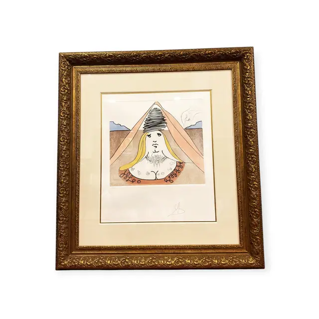
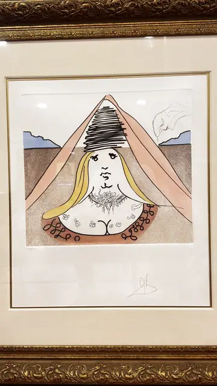
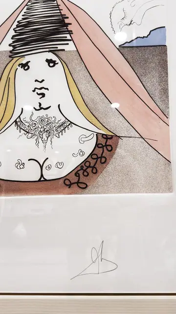
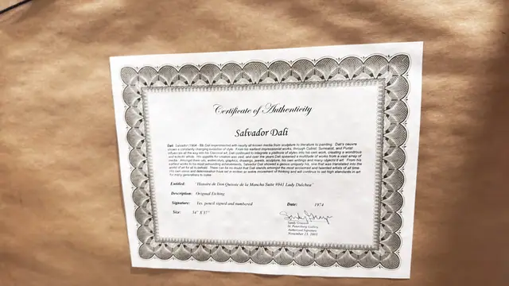

Paintings & Prints
Salvador Dali Etching Lady Dulcinea Don Quixote, Signed in the Plate, Framed, 1974
Salvador Dali · 1974
Price Upon Request




About the Item
Salvador Dali. A slight, dreamlike figure fills the sheet: a pale woman with long yellow hair looks out from beneath a towering black scribbled headdress, her shoulders draped in a pink veil that falls to either side like a tent over a thin blue horizon and mauve hills. Her bodice is drawn in fine looping pen-like line with a scatter of dark curls at the neckline. Colours are soft washes - shell pink, straw yellow, pale blue - over crisp etched outline on white paper, signed in pencil at the lower right below a clean plate mark. Medium: etching with hand colouring on paper. Signed pencil, lower right of the margin. Edition: certificate states pencil signed and numbered; the number itself is not visible in the photographs. Accompanied by a certificate: Certificate of Authenticity for Salvador Dali, 'Histoire de Don Quixote de la Mancha Suite #941 Lady Dulchea', original etching, 1974, pencil signed and numbered, size given as 34" x 37". Inscribed on the reverse or mount: Certificate of Authenticity; Salvador Dali; Entitled: "Histoire de Don Quixote de la Mancha Suite #941 Lady Dulchea"; Description: Original Etching. Condition: Print clean and bright with a crisp plate mark; the linen mat is slightly cream-toned. Ornate gilt frame has small chips and rubs to the composition ornament. Glazing glare in all views.
About the Artist
Salvador Dali (1904-1989) was the Spanish Surrealist whose dream imagery made him one of the most recognisable artists of the twentieth century. Alongside his paintings he produced extensive suites of etchings and lithographs, including literary illustrations such as Don Quixote.
Details
- Creator:
- Salvador Dali
- Creation Year:
- 1974
- Dimensions:
- Height: 40.5 in (102.87 cm)
Width: 35.0 in (88.9 cm)
outside of frame - Medium:
- etching with hand colouring on paper
- Edition:
- certificate states pencil signed and numbered; the number itself is not visible in the photographs
- Period:
- 20Th
- Condition:
- Offered in the condition shown in the photographs.
- Reference Number:
- VO-255
- Documentation:
- Certificate of Authenticity for Salvador Dali, 'Histoire de Don Quixote de la Mancha Suite #941 Lady Dulchea', original etching, 1974, pencil signed and numbered, size given as 34" x 37".
- Gallery Location:
- St. Petersburg Gallery